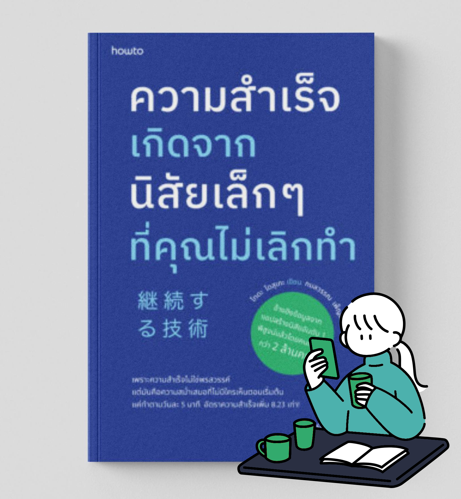

“การสร้างนิสัยดีๆ ที่ยั่งยืนไม่ใช่เรื่องยากอย่างที่คิด! ถ้าคุณอยากรู้วิธีที่ทำให้ความสำเร็จเพิ่มขึ้น 8.23 เท่า แค่ทำตาม 5 นาทีทุกวัน มาดูเทคนิคการสร้างนิสัยให้ทำได้ต่อเนื่อง จากหนังสือ "ความสำเร็จเกิดจากนิสัยเล็กๆ ที่คุณไม่เลิกทำ" ที่พิสูจน์แล้วว่าได้ผลจริงจากคนญี่ปุ่นกว่า 2 ล้านคน!”
หนึ่งในจุดเด่นที่ทำให้ "ความสำเร็จเกิดจากนิสัยเล็กๆ ที่คุณไม่เลิกทำ" กลายเป็นหนังสือที่ไม่เหมือนใคร คือวิธีการเล่าเรื่องผ่านตัวละคร ที่ทำให้ผู้อ่านรู้สึกใกล้ชิดและเข้าใจเนื้อหาได้ง่ายขึ้น
หนังสือเล่มนี้ไม่ใช่แค่การอธิบายทฤษฎีแบบทื่อๆ แต่เป็นการถ่ายทอดประสบการณ์ของตัวละครที่มีชีวิตจริง เหมือนกับว่าคุณกำลังอ่านเรื่องราวของคนที่เผชิญกับสถานการณ์ ที่คล้ายกับของตัวเอง ซึ่งจะทำให้คุณรู้สึกว่า "ฉันสามารถทำแบบนี้ได้เช่นกัน!"
หนังสือเล่มนี้จะเปิดเผยวิธีการสร้างนิสัยที่ทำได้จริงในชีวิตประจำวัน โดยอ้างอิงข้อมูลเชิงลึกจากการศึกษาผู้ใช้งานแอปสร้างนิสัยอันดับหนึ่ง ของญี่ปุ่น ซึ่งเป็นตัวช่วยที่ดีในการสร้างการเปลี่ยนแปลงที่ยั่งยืน และมีประสิทธิภาพ
ไม่เพียงแต่จะบอกว่าควรทำอะไร แต่ยังช่วยให้เข้าใจว่า "ทำไม" สิ่งที่คุณทำทุกวันสามารถนำไปสู่ความสำเร็จได้จริง ผ่านการเรียนรู้จากประสบการณ์และข้อมูลที่ได้รับการพิสูจน์แล้ว
การสร้างวินัยที่มั่นคงเพื่อความสำเร็จเป็นเรื่องที่ท้าทายสำหรับหลายๆ คน แม้เราจะรู้ว่า "การทำสิ่งที่ดีเป็นประจำ" นั้นสำคัญ แต่ทำไมหลายคนถึงยังล้มเหลว? หนังสือเล่มนี้จะเปิดเผยวิธีการสร้างนิสัยที่ทำได้จริงในชีวิตประจำวัน โดยอ้างอิงจากข้อมูลเชิงลึกที่ได้จากการศึกษาผู้ใช้งานแอปสร้างนิสัย อันดับหนึ่งของญี่ปุ่น จึงเป็นตัวช่วยที่ดีในการสร้างการเปลี่ยนแปลง ที่ยั่งยืนและมีประสิทธิภาพ
เข้าใจหลักการสร้างนิสัยที่ทำได้จริง หนังสือเล่มนี้จะช่วยให้คุณเข้าใจว่า ทำไมการสร้างวินัยจึงยาก และให้เคล็ดลับง่ายๆ ที่จะทำให้การสร้างนิสัยใหม่ๆ เป็นไปได้จริงในชีวิตประจำวัน
เทคนิคที่ใช้เวลาไม่นาน คุณจะได้เรียนรู้เทคนิคที่ใช้เวลาเพียงแค่ 5 นาทีต่อวันก็สามารถเปลี่ยนชีวิตได้ทันที
เพิ่มความสำเร็จอย่างมีประสิทธิภาพ: ข้อมูลจากแอปที่มีผู้ใช้งานกว่า 2 ล้านคน จะช่วยให้คุณเห็นภาพการสร้างนิสัยที่ทำให้ ความสำเร็จเพิ่มขึ้นอย่างมากถึง 8.23 เท่า
เป็นหนังสือที่อ่านเพลิน: ด้วยการเล่าเรื่องในรูปแบบนิยายที่เข้าใจง่าย และสนุกสนาน ทำให้หนังสือเล่มนี้ไม่เหมือน หนังสือธุรกิจทั่วไป แต่เต็มไปด้วยข้อมูล ที่ใช้งานได้จริง